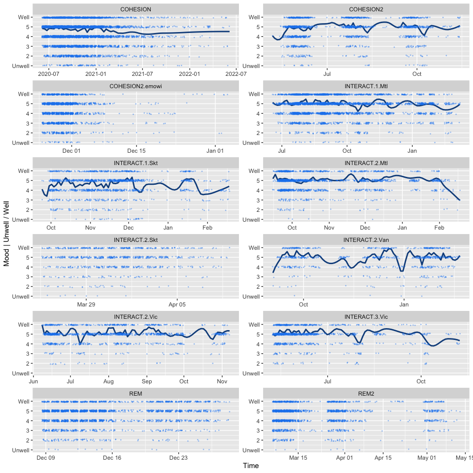
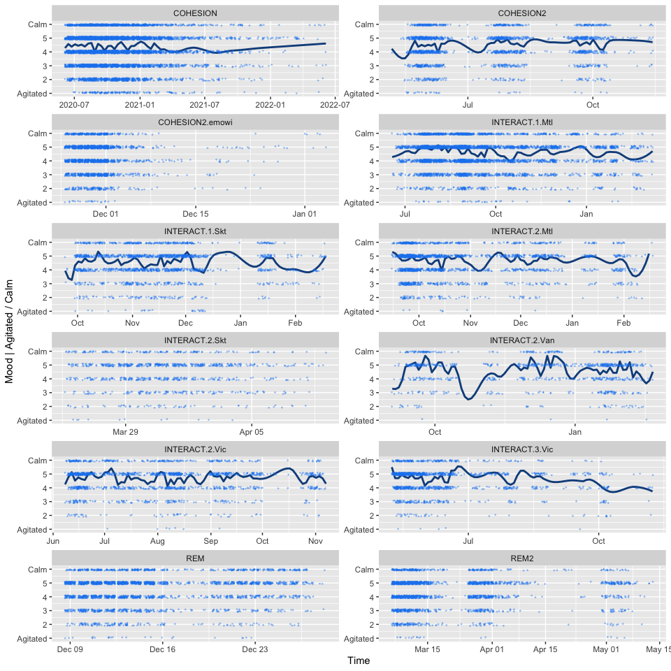
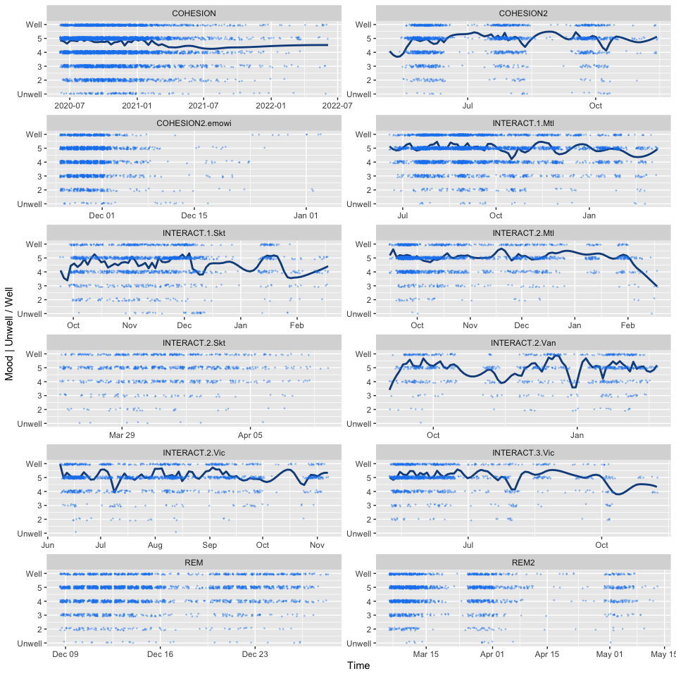
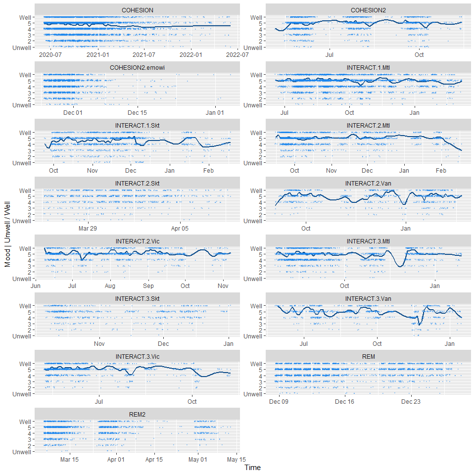

EMA | mood pre-analysis
B. Thierry, Spherelab
13 January, 2023
1 Context
Pre-analysis of mood variables collected through Ethica surveys in several studies:
- INTERACT (waves 1 and 2, except for Victoria and Vancouver at wave 1, as well as Victoria wave 3)
- COHESION, phase I
- REM, phase I & II
The mood variables are the following ones (“At this moment, I feel:”):
mood_a: Unwell (1) / Well (6)mood_b: Content (1) / Discontent (6)mood_c: Agitated (1) / Calm (6)mood_d: Relaxed (1) / Tense (6)mood_e: Tired (1) / Awake (6)mood_f: Full of energy (1) / Without energy (6)
Complementing these 6 mood variables, we also collected information about the people close to the participant when answering the questions.
mood_who:1| No one, I am alone2| No one, but there are people around me3| Friend(s)4| Family member(s)/spouse/partner5| Colleague(s)6| One or more people virtually
2 Data loading
2.1 EMA mood variables
Reading individual tables…
# COHESION
cohesion_ema <- read_csv("data/COHESION/cohesion_ema.csv", show_col_types = FALSE) %>%
transmute(study = 'COHESION',
pid = as.character(participant_id),
locale = locale,
scheduled_time = scheduled_time,
issued_time = issued_time,
response_time = response_time,
latency = latency,
duration = duration,
lat = lat,
lng = lng,
across(matches('mood_(a|b|c|d|e|f|who)$'), as.factor)) %>%
mutate(across(matches('mood_(a|b|c|d|e|f|who)$'), ~na_if(., -7))) %>%
drop_na(matches('mood_(a|b|c|d|e|f|who)$'))
# COHESION wave 2
cohesion_ema2 <- read_csv("data/COHESION/cohesion_ema_w2.csv", show_col_types = FALSE) %>%
transmute(study = 'COHESION2',
pid = as.character(participant_id),
scheduled_time = scheduled_time,
issued_time = issued_time,
response_time = response_time,
latency = latency,
duration = duration,
lat = lat,
lng = lng,
across(matches('mood_(a|b|c|d|e|f|who)$'), as.factor)) %>%
mutate(across(matches('mood_(a|b|c|d|e|f|who)$'), ~na_if(., -7))) %>%
drop_na(matches('mood_(a|b|c|d|e|f|who)$'))
# COHESION wave 2 EMOWI
cohesion_ema2e <- read_csv("data/COHESION/cohesion_ema_w2_emowi.csv", show_col_types = FALSE) %>%
transmute(study = 'COHESION2.emowi',
pid = as.character(participant_id),
scheduled_time = scheduled_time,
issued_time = issued_time,
response_time = response_time,
latency = latency,
duration = duration,
lat = lat,
lng = lng,
across(matches('mood_(a|b|c|d|e|f|who)$'), as.factor)) %>%
mutate(across(matches('mood_(a|b|c|d|e|f|who)$'), ~na_if(., -7))) %>%
drop_na(matches('mood_(a|b|c|d|e|f|who)$'))
# REM
.rem_lut <- read_csv("data/REM/REM_Ethica_LUT.csv", show_col_types = FALSE)
.rem_ema <- read_csv("data/REM/REM_EMA_flat_table.csv", show_col_types = FALSE)
rem_ema <- .rem_lut %>%
inner_join(.rem_ema, by=c("user_id" = "Name")) %>%
transmute(study = 'REM',
pid = unique_id,
locale = language,
scheduled_time = scheduled_time,
issued_time = issued_time,
response_time = response_time,
latency = case_when(duration_minutes == "Expired" ~ Inf,
duration_minutes == "Canceled" ~ NA_real_,
TRUE ~ as.double(duration_minutes) * 60),
duration = NA_real_,
lat = as.double(word(location, start=1)),
lng = as.double(word(location, start=2)),
across(matches('mood_(a|b|c|d|e|f|who)$'), as.factor)) %>%
mutate(across(matches('mood_(a|b|c|d|e|f|who)$'), ~na_if(., -7))) %>%
drop_na(matches('mood_(a|b|c|d|e|f|who)$'))
# REM, wave 2
rem_ema2 <- read_csv("data/REM/REM_EMA_flat_table_w2.csv", show_col_types = FALSE) %>%
transmute(study = 'REM2',
pid = pid,
scheduled_time = `Scheduled Time`,
issued_time = na_if(`Issued Time`, "NULL"),
response_time = na_if(`Response Time`, "NULL"),
latency = case_when(latency == "Expired" ~ Inf,
latency == "Canceled" ~ NA_real_,
TRUE ~ as.double(latency)),
duration = case_when(duration == 'Uknown' ~ NA_real_,
TRUE ~ as.double(duration)),
lat = as.double(word(Location, start=1)),
lng = as.double(word(Location, start=2)),
across(matches('mood_(a|b|c|d|e|f|who)$'), ~na_if(., "NULL"))) %>%
mutate(across(matches('mood_(a|b|c|d|e|f|who)$'), as.integer),
across(matches('mood_(a|b|c|d|e|f|who)$'), as.factor)) %>%
drop_na(matches('mood_(a|b|c|d|e|f|who)$'))
# INTERACT | Montreal
interact_mtl1 <- read_csv("data/INTERACT/montreal_ethica_EMA_wave1_flat_table.20200701.csv", show_col_types = FALSE) %>%
transmute(study = 'INTERACT.1',
pid = as.character(`INTERACT ID`),
locale = language,
scheduled_time = scheduled_time,
issued_time = issued_time,
response_time = response_time,
latency = case_when(duration_minutes == "Expired" ~ Inf,
duration_minutes == "Canceled" ~ NA_real_,
TRUE ~ as.double(duration_minutes) * 60),
duration = NA_real_,
lat = as.double(word(location, start=1)),
lng = as.double(word(location, start=2)),
across(matches('mood_(a|b|c|d|e|f|who)$'), as.factor)) %>%
mutate(across(matches('mood_(a|b|c|d|e|f|who)$'), ~na_if(., -7))) %>%
drop_na(matches('mood_(a|b|c|d|e|f|who)$'))
# INTERACT | Saskatoon
interact_skt1 <- read_csv("data/INTERACT/ema_w1_survey_sk_448.csv", show_col_types = FALSE) %>%
transmute(study = 'INTERACT.1',
pid = as.character(interact_id),
locale = "en",
scheduled_time = strftime(with_tz(scheduled_time, tz="America/Regina"), "%Y-%m-%d %H:%M:%S %Z", tz="America/Regina"), # Read as POSIXct in UTC, cast to char in the proper TZ
issued_time = strftime(with_tz(issued_time, tz="America/Regina"), "%Y-%m-%d %H:%M:%S %Z", tz="America/Regina"),
response_time = strftime(with_tz(record_time, tz="America/Regina"), "%Y-%m-%d %H:%M:%S %Z", tz="America/Regina"),
latency = case_when(duration == -1 ~ Inf,
TRUE ~ duration * 60),
duration = NA_real_,
lat = lat,
lng = lon,
across(matches('mood_(a|b|c|d|e|f)$'), as.factor),
mood_who = as.factor(case_when(mood_who == "No one, I am alone" ~ 1,
mood_who == "No one, but there are people around me" ~ 2,
mood_who == "Friend(s)" ~ 3,
mood_who == "Family member(s)/spouse/partner" ~ 4,
mood_who == "Colleague(s)" ~ 5))) %>%
mutate(across(matches('mood_(a|b|c|d|e|f|who)$'), ~na_if(., -7))) %>%
drop_na(matches('mood_(a|b|c|d|e|f|who)$'))
# INTERACT | Montreal | wave 2
.interact_mtl2.1 <- read_csv("data/INTERACT/ema_w2_survey_mtl_1082.csv", col_types = cols(.default = "c"), show_col_types = FALSE) %>%
transmute(study = 'INTERACT.2',
pid = `INTERACT ID`,
locale = "fr",
scheduled_time = case_when(str_detect(`Scheduled Time`, "\\+04:00") ~ paste(substr(`Scheduled Time`, 1, 10+1+8), 'EDT'),
str_detect(`Scheduled Time`, "\\+05:00") ~ paste(substr(`Scheduled Time`, 1, 10+1+8), 'EST'),
str_detect(`Scheduled Time`, "-07:00") ~ paste(substr(`Scheduled Time`, 1, 10+1+8), 'PDT'),
str_detect(`Scheduled Time`, "-08:00") ~ paste(substr(`Scheduled Time`, 1, 10+1+8), 'PST'),
str_detect(`Scheduled Time`, "\\+06:00") ~ paste(substr(`Scheduled Time`, 1, 10+1+8), 'CST'),
str_detect(`Scheduled Time`, "\\+05:00") ~ paste(substr(`Scheduled Time`, 1, 10+1+8), 'CDT'),
TRUE ~ paste('!!!', `Scheduled Time`)),
issued_time = `Issued Time`,
response_time = `Response Time`,
latency = case_when(`Duration (minutes)` == "Expired" ~ Inf,
`Duration (minutes)` == "Canceled" ~ NA_real_,
TRUE ~ as.double(`Duration (minutes)`) * 60),
duration = NA_real_,
lat = as.double(Latitude),
lng = as.double(Longitude),
across(matches('mood_(a|b|c|d|e|f|who)$'), as.factor)) %>%
mutate(across(matches('mood_(a|b|c|d|e|f|who)$'), ~na_if(., -7))) %>%
drop_na(matches('mood_(a|b|c|d|e|f|who)$'))
.interact_mtl2.2 <- read_csv("data/INTERACT/ema_w2_survey_mtl_1083.csv", col_types = cols(.default = "c"), show_col_types = FALSE) %>%
transmute(study = 'INTERACT.2',
pid = `INTERACT ID`,
locale = "en",
scheduled_time = case_when(str_detect(`Scheduled Time`, "\\+04:00") ~ paste(substr(`Scheduled Time`, 1, 10+1+8), 'EDT'),
str_detect(`Scheduled Time`, "\\+05:00") ~ paste(substr(`Scheduled Time`, 1, 10+1+8), 'EST'),
str_detect(`Scheduled Time`, "-07:00") ~ paste(substr(`Scheduled Time`, 1, 10+1+8), 'PDT'),
str_detect(`Scheduled Time`, "-08:00") ~ paste(substr(`Scheduled Time`, 1, 10+1+8), 'PST'),
str_detect(`Scheduled Time`, "\\+06:00") ~ paste(substr(`Scheduled Time`, 1, 10+1+8), 'CST'),
str_detect(`Scheduled Time`, "\\+05:00") ~ paste(substr(`Scheduled Time`, 1, 10+1+8), 'CDT'),
TRUE ~ paste('!!!', `Scheduled Time`)),
issued_time = `Issued Time`,
response_time = `Response Time`,
latency = case_when(`Duration (minutes)` == "Expired" ~ Inf,
`Duration (minutes)` == "Canceled" ~ NA_real_,
TRUE ~ as.double(`Duration (minutes)`)),
duration = NA_real_,
lat = as.double(Latitude),
lng = as.double(Longitude),
across(matches('mood_(a|b|c|d|e|f|who)$'), as.factor)) %>%
mutate(across(matches('mood_(a|b|c|d|e|f|who)$'), ~na_if(., -7))) %>%
drop_na(matches('mood_(a|b|c|d|e|f|who)$'))
interact_mtl2 <- bind_rows(.interact_mtl2.1, .interact_mtl2.2)
# INTERACT | Saskatoon | wave 2
interact_skt2 <- read_csv("data/INTERACT/ema_w2_survey_sk_1318.csv", col_types = cols(.default = "c"), show_col_types = FALSE) %>%
transmute(study = 'INTERACT.2',
pid = `INTERACT ID`,
locale = "en",
scheduled_time = case_when(str_detect(`Scheduled Time`, "\\+04:00") ~ paste(substr(`Scheduled Time`, 1, 10+1+8), 'EDT'),
str_detect(`Scheduled Time`, "\\+05:00") ~ paste(substr(`Scheduled Time`, 1, 10+1+8), 'EST'),
str_detect(`Scheduled Time`, "-07:00") ~ paste(substr(`Scheduled Time`, 1, 10+1+8), 'PDT'),
str_detect(`Scheduled Time`, "-08:00") ~ paste(substr(`Scheduled Time`, 1, 10+1+8), 'PST'),
str_detect(`Scheduled Time`, "\\+06:00") ~ paste(substr(`Scheduled Time`, 1, 10+1+8), 'CST'),
str_detect(`Scheduled Time`, "\\+05:00") ~ paste(substr(`Scheduled Time`, 1, 10+1+8), 'CDT'),
TRUE ~ paste('!!!', `Scheduled Time`)),
issued_time = `Issued Time`,
response_time = `Response Time`,
latency = case_when(`Duration (minutes)` == "Expired" ~ Inf,
`Duration (minutes)` == "Canceled" ~ NA_real_,
TRUE ~ as.double(`Duration (minutes)`)),
duration = NA_real_,
lat = as.double(Latitude),
lng = as.double(Longitude),
across(matches('mood_(a|b|c|d|e|f|who)$'), as.factor)) %>%
mutate(across(matches('mood_(a|b|c|d|e|f|who)$'), ~na_if(., -7))) %>%
drop_na(matches('mood_(a|b|c|d|e|f|who)$'))
# INTERACT | Vancouver | wave 2
interact_van2 <- read_csv("data/INTERACT/ema_w2_survey_van_1058.csv", col_types = cols(.default = "c"), show_col_types = FALSE) %>%
transmute(study = 'INTERACT.2',
pid = `INTERACT ID`,
locale = "en",
scheduled_time = case_when(str_detect(`Scheduled Time`, "\\+04:00") ~ paste(substr(`Scheduled Time`, 1, 10+1+8), 'EDT'),
str_detect(`Scheduled Time`, "\\+05:00") ~ paste(substr(`Scheduled Time`, 1, 10+1+8), 'EST'),
str_detect(`Scheduled Time`, "-07:00") ~ paste(substr(`Scheduled Time`, 1, 10+1+8), 'PDT'),
str_detect(`Scheduled Time`, "-08:00") ~ paste(substr(`Scheduled Time`, 1, 10+1+8), 'PST'),
str_detect(`Scheduled Time`, "\\+06:00") ~ paste(substr(`Scheduled Time`, 1, 10+1+8), 'CST'),
str_detect(`Scheduled Time`, "\\+05:00") ~ paste(substr(`Scheduled Time`, 1, 10+1+8), 'CDT'),
TRUE ~ paste('!!!', `Scheduled Time`)),
issued_time = `Issued Time`,
response_time = `Response Time`,
latency = case_when(`Duration (minutes)` == "Expired" ~ Inf,
`Duration (minutes)` == "Canceled" ~ NA_real_,
TRUE ~ as.double(`Duration (minutes)`)),
duration = NA_real_,
lat = as.double(Latitude),
lng = as.double(Longitude),
across(matches('mood_(a|b|c|d|e|f|who)$'), as.factor)) %>%
mutate(across(matches('mood_(a|b|c|d|e|f|who)$'), ~na_if(., -7))) %>%
drop_na(matches('mood_(a|b|c|d|e|f|who)$'))
# INTERACT | Victoria | wave 2
interact_vic2 <- read_csv("data/INTERACT/ema_w2_survey_vic_730.csv", col_types = cols(.default = "c"), show_col_types = FALSE) %>%
transmute(study = 'INTERACT.2',
pid = `INTERACT ID`,
locale = "en",
scheduled_time = case_when(str_detect(`Scheduled Time`, "\\+04:00") ~ paste(substr(`Scheduled Time`, 1, 10+1+8), 'EDT'),
str_detect(`Scheduled Time`, "\\+05:00") ~ paste(substr(`Scheduled Time`, 1, 10+1+8), 'EST'),
str_detect(`Scheduled Time`, "-07:00") ~ paste(substr(`Scheduled Time`, 1, 10+1+8), 'PDT'),
str_detect(`Scheduled Time`, "-08:00") ~ paste(substr(`Scheduled Time`, 1, 10+1+8), 'PST'),
str_detect(`Scheduled Time`, "\\+06:00") ~ paste(substr(`Scheduled Time`, 1, 10+1+8), 'CST'),
str_detect(`Scheduled Time`, "\\+05:00") ~ paste(substr(`Scheduled Time`, 1, 10+1+8), 'CDT'),
TRUE ~ paste('!!!', `Scheduled Time`)),
issued_time = `Issued Time`,
response_time = `Response Time`,
latency = case_when(`Duration (minutes)` == "Expired" ~ Inf,
`Duration (minutes)` == "Canceled" ~ NA_real_,
TRUE ~ as.double(`Duration (minutes)`)),
duration = NA_real_,
lat = as.double(Latitude),
lng = as.double(Longitude),
across(matches('mood_(a|b|c|d|e|f|who)$'), as.factor)) %>%
mutate(across(matches('mood_(a|b|c|d|e|f|who)$'), ~na_if(., -7))) %>%
drop_na(matches('mood_(a|b|c|d|e|f|who)$'))## New names:
## • `` -> `...10`# INTERACT | Victoria | wave 3
interact_vic3 <- read_csv("data/INTERACT/ema_w3_survey_vic_1655.csv", col_types = cols(.default = "c"), show_col_types = FALSE) %>%
transmute(study = 'INTERACT.3',
pid = `INTERACT ID`,
locale = "en",
scheduled_time = case_when(str_detect(`Scheduled Time`, "\\+04:00") ~ paste(substr(`Scheduled Time`, 1, 10+1+8), 'EDT'),
str_detect(`Scheduled Time`, "\\+05:00") ~ paste(substr(`Scheduled Time`, 1, 10+1+8), 'EST'),
str_detect(`Scheduled Time`, "-07:00") ~ paste(substr(`Scheduled Time`, 1, 10+1+8), 'PDT'),
str_detect(`Scheduled Time`, "-08:00") ~ paste(substr(`Scheduled Time`, 1, 10+1+8), 'PST'),
str_detect(`Scheduled Time`, "\\+06:00") ~ paste(substr(`Scheduled Time`, 1, 10+1+8), 'CST'),
str_detect(`Scheduled Time`, "\\+05:00") ~ paste(substr(`Scheduled Time`, 1, 10+1+8), 'CDT'),
TRUE ~ paste('!!!', `Scheduled Time`)),
issued_time = `Issued Time`,
response_time = `Response Time`,
latency = case_when(`Duration (minutes)` == "Expired" ~ Inf,
`Duration (minutes)` == "Canceled" ~ NA_real_,
TRUE ~ as.double(`Duration (minutes)`)),
duration = NA_real_,
lat = as.double(Latitude),
lng = as.double(Longitude),
across(matches('mood_(a|b|c|d|e|f|who)$'), as.factor)) %>%
mutate(across(matches('mood_(a|b|c|d|e|f|who)$'), ~na_if(., -7))) %>%
drop_na(matches('mood_(a|b|c|d|e|f|who)$'))## New names:
## • `` -> `...10`Merge and clean…
ema_full <- bind_rows(cohesion_ema,
cohesion_ema2,
cohesion_ema2e,
rem_ema,
rem_ema2,
interact_mtl1, interact_skt1,
interact_mtl2, interact_skt2, interact_van2, interact_vic2,
interact_vic3) %>%
mutate(tz_code = substr(scheduled_time, 21, 40)) %>%
distinct() # some rows are duplicated in COHESION study
# Add geometry
ema_full <- st_as_sf(ema_full, coords = c("lng", "lat"), crs = 4326, na.fail = F, remove = F)
# Check all existing TZ code in our database and recode to valid TZ
tz_lut <- ema_full %>%
data.frame() %>%
group_by(tz_code) %>%
summarise(n = n(),
mean_lat = mean(lat, na.rm = T),
mean_lng = mean(lng, na.rm = T)) %>%
inner_join(data.frame(tz_code = c("ADT", "AEDT", "AEST", "AST", "CDT", "CEST", "CET", "CST", "EDT", "EET", "EST", "GMT", "IST", "MDT", "MST", "NDT", "NST", "PDT", "PST"),
tz_name = c("Canada/Atlantic", # ADT
"Australia/Victoria", # AEDT
"Australia/Victoria", # AEST
"Canada/Atlantic", # AST
"Canada/Central", # CDT
"Europe/Paris", # CEST
"Europe/Paris", # CET
"Canada/Saskatchewan", # CST
"Canada/Eastern", # EDT
"Europe/Athens", # EET
"Canada/Eastern", # EST
"Greenwicth Mean Time", # GMT
"Indian Standard Time", # IST
"Canada/Mountain", # MDT
"Canada/Mountain", # MST
"Canada/Newfoundland", # NDT
"Canada/Newfoundland", # NST
"Canada/Pacific", # PDT
"Canada/Pacific" # PST
),
# hour shift compared to UTC is needed instead of named TZ
tz_shift = c("-0300", # ADT
"+1100", # AEDT
"+1000", # AEST
"-0400", # AST
"-0500", # CDT
"+0200", # CEST
"+0100", # CET
"-0600", # CST
"-0400", # EDT
"+0200", # EET
"-0500", # EST
"-0000", # GMT
"+0530", # IST
"-0600", # MDT
"-0700", # MST
"-0230", # NDT
"-0330", # NST
"-0700", # PDT
"-0800" # PST
)), by="tz_code")
# Control where tz clusters
#factpal <- colorFactor("Paired", tz_lut$tz_code)
#leaflet() %>%
# addProviderTiles("Stamen.Toner") %>%
# addCircleMarkers(data = ema_full, radius = 3, opacity = .3, color = ~factpal(factor(tz_code)))
# Convert datetime to POSIXct objects, accounting for TZ time shifts
ema_full <- ema_full %>%
left_join(select(tz_lut, tz_code, tz_name, tz_shift), by="tz_code") %>%
mutate(scheduled_time = ymd_hms(paste(substr(scheduled_time, 1, 10+1+8), tz_shift), tz="UTC"),
issued_time = ymd_hms(paste(substr(issued_time, 1, 10+1+8), tz_shift), tz="UTC"),
response_time = ymd_hms(paste(substr(response_time, 1, 10+1+8), tz_shift), tz="UTC")) %>%
select(!tz_shift)## Warning: 1 failed to parse.
## Warning: 1 failed to parse.2.2 Participants’ personal data
Includes recoding/harmonizing the various data.
cohesion_lut <- read_csv("data/COHESION/cohesion_ema_user.csv", show_col_types = FALSE) %>%
transmute(study = "COHESION",
pid = as.character(participant_id),
prov = province,
postal_code = str_replace(postal_code, " ", ""),
age = age,
gender = case_when(gender == "Man" ~ "Man",
gender == "Woman" ~ "Woman",
TRUE ~ "Other"),
educ = case_when(education == "Primary/Elementary School" ~ "Primary/Secondary School",
education == "Secondary School" ~ "Primary/Secondary School",
education == "Trade/Technical School or College Diploma" ~ "Trade/Technical School or College Diploma",
education == "University Degree" ~ "University Degree and higher",
education == "Graduate Degree" ~ "University Degree and higher",
education == "Post-Graduate Degree" ~ "University Degree and higher",
TRUE ~ "Other"),
ethnic_group = case_when(ethnic_group == "White" ~ "White",
TRUE ~ "Other"),
income = case_when(income_pre_covid == "No income" ~ "$0 to $19,999",
income_pre_covid == "$1 to $9,999" ~ "$0 to $19,999",
income_pre_covid == "$10,000 to $14,999" ~ "$0 to $19,999",
income_pre_covid == "$15,000 to $19,999" ~ "$0 to $19,999",
income_pre_covid == "$20,000 to $29,999" ~ "$20,000 to $49,999",
income_pre_covid == "$30,000 to $39,999" ~ "$20,000 to $49,999",
income_pre_covid == "$40,000 to $49,999" ~ "$20,000 to $49,999",
income_pre_covid == "$50,000 to $99,999" ~ "$50,000 to $99,999",
income_pre_covid == "$100,000 to $149,999" ~ "$100,000 to $149,999",
income_pre_covid == "$150,000 to $199,999" ~ "$150,000 to $199,999",
income_pre_covid == "$200,000 or more" ~ "$200,000 or more",
TRUE ~ "I don’t know/Prefer not to answer"))
cohesion2_lut <- read_csv("data/COHESION/cohesion_ema_user_w2.csv", show_col_types = FALSE) %>%
transmute(study = "COHESION2",
pid = as.character(participant_id),
prov = province,
postal_code = str_replace(postal_code, " ", ""),
age = age,
gender = case_when(gender == "Man" ~ "Man",
gender == "Woman" ~ "Woman",
TRUE ~ "Other"),
educ = case_when(education == "Primary/Elementary School" ~ "Primary/Secondary School",
education == "Secondary School" ~ "Primary/Secondary School",
education == "Trade/Technical School or College Diploma" ~ "Trade/Technical School or College Diploma",
education == "University Degree" ~ "University Degree and higher",
education == "Graduate Degree" ~ "University Degree and higher",
education == "Post-Graduate Degree" ~ "University Degree and higher",
TRUE ~ "Other"),
ethnic_group = case_when(ethnic_group == "White" ~ "White",
TRUE ~ "Other"),
income = case_when(income_pre_covid == "No income" ~ "$0 to $19,999",
income_pre_covid == "$1 to $9,999" ~ "$0 to $19,999",
income_pre_covid == "$10,000 to $14,999" ~ "$0 to $19,999",
income_pre_covid == "$15,000 to $19,999" ~ "$0 to $19,999",
income_pre_covid == "$20,000 to $29,999" ~ "$20,000 to $49,999",
income_pre_covid == "$30,000 to $39,999" ~ "$20,000 to $49,999",
income_pre_covid == "$40,000 to $49,999" ~ "$20,000 to $49,999",
income_pre_covid == "$50,000 to $99,999" ~ "$50,000 to $99,999",
income_pre_covid == "$100,000 to $149,999" ~ "$100,000 to $149,999",
income_pre_covid == "$150,000 to $199,999" ~ "$150,000 to $199,999",
income_pre_covid == "$200,000 or more" ~ "$200,000 or more",
TRUE ~ "I don’t know/Prefer not to answer"))
cohesion2e_lut <- read_csv("data/COHESION/cohesion_ema_user_w2_emowi.csv", show_col_types = FALSE) %>%
transmute(study = "COHESION2.emowi",
pid = as.character(participant_id),
prov = province,
postal_code = str_replace(postal_code, " ", ""),
age = age,
gender = case_when(gender == "Man" ~ "Man",
gender == "Woman" ~ "Woman",
TRUE ~ "Other"),
educ = case_when(education == "Primary/Elementary School" ~ "Primary/Secondary School",
education == "Secondary School" ~ "Primary/Secondary School",
education == "Trade/Technical School or College Diploma" ~ "Trade/Technical School or College Diploma",
education == "University Degree" ~ "University Degree and higher",
education == "Graduate Degree" ~ "University Degree and higher",
education == "Post-Graduate Degree" ~ "University Degree and higher",
TRUE ~ "Other"),
ethnic_group = case_when(ethnic_group == "White" ~ "White",
TRUE ~ "Other"),
income = case_when(income_pre_covid == "No income" ~ "$0 to $19,999",
income_pre_covid == "$1 to $9,999" ~ "$0 to $19,999",
income_pre_covid == "$10,000 to $14,999" ~ "$0 to $19,999",
income_pre_covid == "$15,000 to $19,999" ~ "$0 to $19,999",
income_pre_covid == "$20,000 to $29,999" ~ "$20,000 to $49,999",
income_pre_covid == "$30,000 to $39,999" ~ "$20,000 to $49,999",
income_pre_covid == "$40,000 to $49,999" ~ "$20,000 to $49,999",
income_pre_covid == "$50,000 to $99,999" ~ "$50,000 to $99,999",
income_pre_covid == "$100,000 to $149,999" ~ "$100,000 to $149,999",
income_pre_covid == "$150,000 to $199,999" ~ "$150,000 to $199,999",
income_pre_covid == "$200,000 or more" ~ "$200,000 or more",
TRUE ~ "I don’t know/Prefer not to answer"))
interact_lut <- read_csv("data/INTERACT/INTERACT_essence_2021-11-08_health.csv", show_col_types = FALSE) %>%
transmute(study = paste0("INTERACT.", wave_id),
pid = as.character(interact_id),
prov = case_when(city_id == "Montréal" ~ "QC",
city_id == "Saskatoon" ~ "SK",
city_id == "Vancouver" ~ "BC",
city_id == "Victoria" ~ "BC"),
postal_code = NA_character_, # Could be retrieved from raw data
age = age,
gender = case_when(gender == 1 ~ "Man",
gender == 2 ~ "Woman",
gender > 2 ~ "Other" ),
educ = case_when(education == 1 ~ "Primary/Secondary School",
education == 2 ~ "Primary/Secondary School",
education == 3 ~ "Trade/Technical School or College Diploma",
education == 4 ~ "University Degree and higher",
education == 5 ~ "University Degree and higher",
TRUE ~ "Other"),
ethnic_group = case_when(ethnicity_c == 4 ~ "White",
TRUE ~ "Other"),
income = case_when(income == 1 ~ "$0 to $19,999",
income == 2 ~ "$0 to $19,999",
income == 3 ~ "$0 to $19,999",
income == 4 ~ "$0 to $19,999",
income == 5 ~ "$20,000 to $49,999",
income == 6 ~ "$20,000 to $49,999",
income == 7 ~ "$20,000 to $49,999",
income == 8 ~ "$50,000 to $99,999",
income == 9 ~ "$100,000 to $149,999",
income == 10 ~ "$150,000 to $199,999",
income == 11 ~ "$200,000 or more",
TRUE ~ "I don’t know/Prefer not to answer"))
rem_lut <- read_csv("data/REM/w1.FINAL_WEIGHTED_24May22 - Copy.csv", show_col_types = FALSE) %>%
transmute(study = "REM",
pid = uniqueID,
prov = "QC",
postal_code = POSTCODE,
age = approx_age,
gender = case_when(GENDER == "Male" ~ "Man",
GENDER == "Female" ~ "Woman",
is.na(GENDER) ~ NA_character_,
TRUE ~ "Other"),
educ = case_when(EDUCATION == "Primary/Elementary school diploma" ~ "Primary/Secondary School",
EDUCATION == "Secondary school diploma" ~ "Primary/Secondary School",
EDUCATION == "Trade/Technical school or college diploma" ~ "Trade/Technical School or College Diploma",
EDUCATION == "Undergraduate degree" ~ "University Degree and higher",
EDUCATION == "Graduate degree" ~ "University Degree and higher",
EDUCATION == "Post-Graduate Degree" ~ "University Degree and higher",
is.na(EDUCATION) ~ NA_character_,
TRUE ~ "Other"),
ethnic_group = case_when(ETHNICITY.4. == "Yes" ~ "White",
TRUE ~ "Other"),
income = INCOME) # Income cannot be merged with INTERACT and COHESION categories, keep them as-is.## Warning: One or more parsing issues, see `problems()` for detailsrem2_lut <- read_csv("data/REM/w2.FINAL_COMPLETE_9May22.csv", show_col_types = FALSE) %>%
transmute(study = "REM2",
pid = uniqueID,
prov = "QC",
postal_code = POSTCODE,
age = approx_age,
gender = case_when(GENDER == "Male" ~ "Man",
GENDER == "Female" ~ "Woman",
is.na(GENDER) ~ NA_character_,
TRUE ~ "Other"),
educ = case_when(EDUCATION == "Primary/Elementary school diploma" ~ "Primary/Secondary School",
EDUCATION == "Secondary school diploma" ~ "Primary/Secondary School",
EDUCATION == "Trade/Technical school or college diploma" ~ "Trade/Technical School or College Diploma",
EDUCATION == "Undergraduate degree" ~ "University Degree and higher",
EDUCATION == "Graduate degree" ~ "University Degree and higher",
EDUCATION == "Post-Graduate Degree" ~ "University Degree and higher",
is.na(EDUCATION) ~ NA_character_,
TRUE ~ "Other"),
ethnic_group = case_when(ETHNICITY.4. == "Yes" ~ "White",
TRUE ~ "Other"),
income = INCOME) # Income cannot be merged with INTERACT and COHESION categories, keep them as-is.## Warning: One or more parsing issues, see `problems()` for details# Combine LUTs
pid_lut <- bind_rows(cohesion_lut, cohesion2_lut, cohesion2e_lut, interact_lut, rem_lut, rem2_lut)2.3 Full EMA dataset w/ participants’ data
ema_full <- ema_full %>%
left_join(pid_lut, by=c("study", "pid"))
head(select(ema_full, !c(lat, lng, postal_code)))NB lat, lng, postal_code, columns hidden in table above to keep participant privacy
3 Environmental data
3.1 Greenness
See with CANUE if one can get raw mosaic NDVI image to link to custom locations (mail sent on 2022-08-19). Temporary solution for Montréal: we use the CMM land use layer from 2020.
We retrieve all the individual zipped shapefiles, create a template spatial table using ogr2ogr, then append all shapefiles to the newly created table:
# Create a template table, which needs to be truncated before proceeding to the next chunk
ogr2ogr \
-f "PostgreSQL" PG:"dbname='xema_primer'" \
-sql "SELECT '55057-US-2020' AS source, * FROM \"55057-US-2020\"" \
~/Downloads/CMM_US/55057-US-2020/55057-US-2020.shp \
-nln "cmm_occup_sol" \
-nlt MULTIPOLYGON \
-t_srs EPSG:4326
for d in ~/Downloads/CMM_US/*; do
if [ -d "$d" ]; then
f="$(basename -- $d)"
ff="$d/$f.shp"
ogr2ogr -append \
-f "PostgreSQL" PG:"dbname='xema_primer'" \
-sql "SELECT '$f' AS source, * FROM \"$f\"" \
$ff \
-nlt MULTIPOLYGON \
-nln "cmm_occup_sol" \
-t_srs EPSG:4326
echo "$f OK"
fi
done# Load CMM land use layer and keep only Parks and green spaces (code = 600) || NB: special processing of Parc Maisonneuve + jardin botanique
.cmm <- st_read("PG:dbname=xema_primer", "cmm_occup_sol") %>%
st_make_valid()## Reading layer `cmm_occup_sol' from data source `PG:dbname=xema_primer' using driver `PostgreSQL'
## replacing null geometries with empty geometries
## Simple feature collection with 251150 features and 39 fields (with 1 geometry empty)
## Geometry type: MULTIPOLYGON
## Dimension: XY
## Bounding box: xmin: -74.26761 ymin: 45.22899 xmax: -73.06188 ymax: 45.98455
## Geodetic CRS: WGS 84.cmm_parks <- .cmm %>%
filter(util_sol == 600 | id %in% c(143129, 145276)) %>%
select(source, id, codegeog)
# Extract distance to closest park/greenspace (within CMM area)
.ema_full_cmm <- ema_full %>%
st_filter(.cmm)
.knn <- .ema_full_cmm %>%
st_nearest_feature(.cmm_parks)
env.dist2park <- .ema_full_cmm %>%
cbind(closest_park = st_distance(.ema_full_cmm, .cmm_parks[.knn,], by_element = TRUE)) %>%
data.frame() %>%
select(study, pid, scheduled_time, closest_park)3.2 Canopy
Canopy changes is based on data produced by CMM, using multispectral aerial imagery and lidar. We keep 2019 year data. Data is of raster type and need to be processed within PostGIS for efficiency.
# Codes du raster "espace vert"
# 0. No data (hors CMM)
# 1. NDVI < 0,3 et MNH < 3,0m = Minéral bas (route, stationnement, etc.)
# 2. NDVI < 0,3 et MNH ≥ 3,0m = Minéral haut (constructions)
# 3. NDVI ≥ 0,3 et MNH < 3,0m = Végétal bas (culture, gazon, etc.)
# 4. NDVI ≥ 0,3 et MNH ≥ 3,0m = Végétal haut (canopée)
# 5. Aquatique
# Load rasters into pg database for further processing
system('psql -d xema_primer -c "CREATE EXTENSION IF NOT EXISTS postgis"')
system('psql -d xema_primer -c "CREATE EXTENSION IF NOT EXISTS postgis_raster"')
if (nrow(dbGetQuery(.con, "SELECT 1 test WHERE to_regclass('canopee2019') IS NOT NULL;")) == 0) {
system("raster2pgsql -s 32188 -I -C -M data/canopy/2019/*.tif -F -t 1000x1000 canopee2019 | psql -d xema_primer", intern = TRUE)
} else { message("PG Raster 'canopee2019' already imported") }## PG Raster 'canopee2019' already imported# Resample to 10m as the original rasters have a 1m resolution, which is too high to allow for a swift processing
if (nrow(dbGetQuery(.con, "SELECT 1 test WHERE to_regclass('canopee2019_10m') IS NOT NULL;")) == 0) {
system("gdal_translate -of GTiff PG:\"host=localhost dbname=gentrif_bei table=canopee2019 mode=2\" -r mode -tr 10 10 data/canopy/canopee2019_10m.tif")
system("raster2pgsql -s 32188 -I -C -M data/canopy/canopee2019_10m.tif -F -t 100x100 canopee2019_10m | psql -d xema_primer")
} else { message("PG Raster 'canopee2019_10m' already imported") }## PG Raster 'canopee2019_10m' already imported# Push EMA locations to pg
ema_full %>%
st_transform(crs = 32188) %>%
st_write(.con, "ema_full",
layer_options = c("OVERWRITE=yes", "LAUNDER=true", "SPATIAL_INDEX=gist", "GEOMETRY_NAME=geom"))## Note: method with signature 'DBIObject#sf' chosen for function 'dbDataType',
## target signature 'PqConnection#sf'.
## "PqConnection#ANY" would also be validsystem("psql -d xema_primer -c 'CREATE INDEX ON ema_full USING gist (geometry)'")SELECT study, pid, scheduled_time
,ST_Value(rast, geometry) As pv
FROM canopee2019_10m
JOIN ema_full ON ST_Intersects(geometry, rast)env.esp_vert <- env.esp_vert %>%
mutate(env.canopy = factor(case_when(pv == 0 ~ NA_character_,
pv == 1 ~ "Minéral bas",
pv == 2 ~ "Minéral haut",
pv == 3 ~ "Végétal bas",
pv == 4 ~ "Végétal haut",
pv == 5 ~ "Aquatique"))) %>%
select(!pv)3.3 Major road density
Using DMTI CanMap 2018 dataset
# Get major roads from FGDB, keeping only the major roads according to data dictionary
# Expressways
# 1. Primary Highways
# 2. Secondary Highways
# 3. Major Roads
# 4. Local Roads
st_read("data/CanMapContentSuite.gdb", "MajorRoadsLine") %>%
filter(CARTO < 4) %>%
# Dump it to pg database <xema_primer> for further processing
st_write("PG:dbname=xema_primer", "major_roads", delete_layer = TRUE, layer_options = c("append=FALSE", "OVERWRITE=yes", "LAUNDER=true"))## Reading layer `MajorRoadsLine' from data source
## `/Volumes/BigData/Temp/DMTI_BaseLayers_2018/CanMapContentSuite/CAN/Data/CanMapContentSuite.gdb'
## using driver `OpenFileGDB'
## Simple feature collection with 475364 features and 17 fields
## Geometry type: MULTILINESTRING
## Dimension: XY
## Bounding box: xmin: -141.0014 ymin: 41.98495 xmax: -52.62366 ymax: 69.38091
## Geodetic CRS: WGS 84
## Deleting layer `major_roads' using driver `PostgreSQL'
## Writing layer `major_roads' to data source
## `PG:dbname=xema_primer' using driver `PostgreSQL'
## options: append=FALSE OVERWRITE=yes LAUNDER=true## Warning in CPL_write_ogr(obj, dsn, layer, driver,
## as.character(dataset_options), : GDAL Message 6: dataset PG:dbname=xema_primer
## does not support layer creation option append## Writing 291723 features with 17 fields and geometry type Multi Line String.# Dump 100m buffers to pg database
ema_full %>% st_buffer(units::set_units(100, m)) %>%
select(study, pid, scheduled_time) %>% # keep keys for later join
st_write("PG:dbname=xema_primer", "ema_buf100", delete_layer = TRUE, layer_options = c("append=FALSE", "OVERWRITE=yes", "LAUNDER=true"))## Deleting layer `ema_buf100' using driver `PostgreSQL'
## Writing layer `ema_buf100' to data source
## `PG:dbname=xema_primer' using driver `PostgreSQL'
## options: append=FALSE OVERWRITE=yes LAUNDER=true## Warning in CPL_write_ogr(obj, dsn, layer, driver,
## as.character(dataset_options), : GDAL Message 6: dataset PG:dbname=xema_primer
## does not support layer creation option append## Writing 33775 features with 3 fields and geometry type Polygon.select study, pid, scheduled_time,
sum(coalesce(rd_length, 0)) / st_area(wkb_geometry::geography) rd_density
from (
select b.*, ST_Length(ST_Intersection(b.wkb_geometry, r.wkb_geometry)::geography) rd_length
from (select * from ema_buf100 where not st_isempty(wkb_geometry)) as b
left join major_roads as r on st_intersects(b.wkb_geometry, r.wkb_geometry)) foo
group by study, pid, scheduled_time, wkb_geometry3.4 Gentrified neighborhood
Get the 5yr span Ding metric (from project GENUINE|gentrification_metrics)
# Read gentrification status at CT level
.gentrif_ding_16 <- st_read("data/gentrified_5years.gpkg", "gentrified_ding_16")## Reading layer `gentrified_ding_16' from data source
## `/Users/benoit/WORKSPACE/gentrification_metrics/R/data/gentrified_5years.gpkg'
## using driver `GPKG'
## Simple feature collection with 5721 features and 8 fields
## Geometry type: MULTIPOLYGON
## Dimension: XY
## Bounding box: xmin: -124.6992 ymin: 42.01779 xmax: -52.61941 ymax: 60.00006
## Geodetic CRS: WGS 84env.gentrif_ding_16 <- ema_full %>%
st_join(.gentrif_ding_16) %>%
as.data.frame() %>%
filter(!is.na(gentrified_2016_2011)) %>%
select(study, pid, scheduled_time, gentrified_2016_2011) # keep keys for later join3.5 Social and material deprivation
Get Pampalon index here
.pampalon <- openxlsx::read.xlsx("data/Canada2016Pampalon/A-MSDIData_Can2016_eng/1. EquivalenceTableCanada2016_ENG.xlsx", sheet = 2) %>%
mutate(DA = as.character(DA)) %>%
select(DA, SCOREMAT, SCORESOC)
# 2016 DA boundaries
DA16 <- cancensus::get_census(dataset='CA16', regions=list(C="01"), level='DA', geo_format = "sf", api_key = Sys.getenv("CM_API_KEY"), quiet = TRUE) %>%
filter(Type == "DA") %>%
st_make_valid()
env.pampalon <- ema_full %>%
st_join(DA16, left=TRUE) %>%
as.data.frame() %>%
inner_join(.pampalon, by = c("GeoUID" = "DA")) %>%
# filter(!is.na(SCOREMAT)) %>%
rename(DA_UID = GeoUID) %>%
select(study, pid, scheduled_time, DA_UID, CT_UID, CMA_UID, CSD_UID, SCOREMAT, SCORESOC)3.6 Full EMA dataset w/ environmental data
ema_full <- ema_full %>%
left_join(env.dist2park, by=c("study", "pid", "scheduled_time")) %>%
left_join(env.esp_vert, by=c("study", "pid", "scheduled_time")) %>%
left_join(env.mjr_rd_dsty, by=c("study", "pid", "scheduled_time")) %>%
left_join(env.gentrif_ding_16, by=c("study", "pid", "scheduled_time")) %>%
left_join(env.pampalon, by=c("study", "pid", "scheduled_time")) %>%
rename(env.DA16_UID = DA_UID,
env.CT16_UID = CT_UID,
env.CMA16_UID = CMA_UID,
env.CSD16_UID = CSD_UID,
env.closest_park = closest_park,
env.rd_density = rd_density,
env.gentrified = gentrified_2016_2011,
env.depriv_social = SCORESOC,
env.depriv_material = SCOREMAT)
head(select(ema_full, !c(lat, lng, postal_code, env.DA16_UID)))NB lat, lng, postal_code, env.DA16_UID columns hidden in table above to keep participant privacy
3.7 Export data
ema_full %>%
data.frame() %>%
select(!geometry) %>%
write_csv("data/ema_full.csv")
# Sadun's export
ema_full %>%
data.frame() %>%
select(!geometry) %>%
filter(substr(study, 1,3) == "REM" | (study %in% c("INTERACT.1", "INTERACT.2") & substr(pid, 1, 1) == "4")) %>%
write_csv("data/ema_full.sadun.csv")
# All INTERACT EMA export
ema_full %>%
data.frame() %>%
select(!geometry) %>%
filter(study %in% c("INTERACT.1", "INTERACT.2")) %>%
write_csv("data/ema_full.INTERACT.csv")
# All COHESION EMA export
ema_full %>%
data.frame() %>%
select(!geometry) %>%
filter(study == 'COHESION') %>%
write_csv("data/ema_full.COHESION.csv")3.8 Data dictionary
study: one ofCOHESION,INTERACTorREM, which are the three studies for which EMA mood data is collectedpid: participant IDlocale: English or French survey language selected by participantscheduled_time: date/time of scheduled EMA, in UTCissued_time: date/time of EMA actually released, in UTCresponse_time: date/time of participant’s response to EMA, in UTClatency: interval between when EMA is issued and when EMA is completed by participant, expressed in seconds; can beif EMA has been canceled or if EMA has expired duration: time taken by participant to complete the EMA, in secondslatandlng: latitude and longitude; geographic coordinates of participant when EMA is completed; can beif location could not be inferred mood_a: at this moment, I feel Unwell (1) >> Well (6)mood_b: at this moment, I feel Content (1) >> Discontent (6)mood_c: at this moment, I feel Agitated (1) >> Calm (6)mood_d: at this moment, I feel Relaxed (1) >> Tense (6)mood_e: at this moment, I feel Tired (1) >> Awake (6)mood_f: at this moment, I feel Full of energy (1) >> Without energy (6)mood_who: At this moment, I’m interacting with…1| No one, I am alone2| No one, but there are people around me3| Friend(s)4| Family member(s)/spouse/partner5| Colleague(s)6| One or more people virtually
tz_codeandtz_name: timezone code (inferred or explicit)prov: province of residence of participantpostal_code: postal code of residence of participantage: age of participantgender: gender of participantManWomanOther
educ: highest education levelPrimary/Secondary SchoolTrade/Technical School or College DiplomaUniversity Degree and higherOther
ethnic_group: ethnic group of participant; NB due to a mismatch of ethnic classification between studies, we had to dichotomize between white and other (including non-white and mixed identities)WhiteOther: comprises non-white as well as mixed identities, including white and nin-white ancestors
income: participant’s household income; NBREMstudy is using a different classification and cannot be reconciled with the other study classificationenv.closest_park: distance to closest park, in meters (see greenness); based on CMM land cover data, hence limited to EMA responses collected in the larger Montreal metropolitan regionenv.canopy: canopy type matching EMA response location (see canopy); based on CMM canopy data, hence limited to EMA responses collected in the larger Montreal metropolitan regionAquatique: waterMinéral bas: lower mineral cover, e.g. parking (NDVI < 0.3 and height < 2m)Minéral haut: upper mineral cover, e.g. buildings (NDVI < 0.3 and height > 2m)Végétal bas: lower green cover, e.g. meadows, grass (NDVI > 0.3 and height < 2m)Végétal haut: upper green cover, e.g. forest, trees (NDVI > 0.3 and height > 2m)
env.rd_density: major road density within a 100m buffer around EMA response location, in km/km2 (see major road density)env.gentrified: gentrification status of CT where EMA response was located, based on Ding (see gentrified neighborhood); only EMA response located within a Census Metropolitan Area get a gentrification statusenv.depriv_materialandenv.depriv_social: Pampalon material and social deprivation indices of DA where EMA response was located (see Social and material deprivation)env.DA16_UID,env.CT16_UID,env.CMA16_UIDandenv.CSD16_UID: 2016 Census unit IDs (Dissemination Area, Census Tract, Census Metropolitan Area, Census Subdivision) where EMA response was located
4 Preliminary analyses
4.1 Descriptive stats
.ema_full <- ema_full %>%
data.frame() %>%
mutate(city = case_when(substr(pid, 1, 1) == "1" ~ "Vic",
substr(pid, 1, 1) == "2" ~ "Van",
substr(pid, 1, 1) == "3" ~ "Skt",
substr(pid, 1, 1) == "4" ~ "Mtl"),
study = case_when(str_detect(study, "INTERACT") ~ paste0(study, ".", city),
TRUE ~ study))
# Computing N obs/day
.ema_full0 <- .ema_full %>%
group_by(study, pid, as_date(response_time)) %>%
summarise(n_by_day = n()) %>%
summarise(avg_obs_day = mean(n_by_day))## `summarise()` has grouped output by 'study', 'pid'. You can override using the
## `.groups` argument.
## `summarise()` has grouped output by 'study'. You can override using the
## `.groups` argument.# Computing stats at the participant level
.ema_full <- .ema_full %>%
group_by(study, pid, age, gender, educ, ethnic_group, income) %>%
summarise(n = n(),
span_days = as.period(interval(start=min(response_time), end=max(response_time))) / days(1)) %>%
mutate(gender_man = case_when(gender == "Man" ~ 1,
gender != "Man" ~ 0),
gender_woman = case_when(gender == "Woman" ~ 1,
gender != "Woman" ~ 0)) %>%
left_join(.ema_full0, by = c("study", "pid"))## `summarise()` has grouped output by 'study', 'pid', 'age', 'gender', 'educ',
## 'ethnic_group'. You can override using the `.groups` argument.dstats <- .ema_full %>%
group_by(study) %>%
summarise(`N Pid` = n(),
`N obs (avg)` = round(mean(n), 1),
`N obs (sd)` = round(sd(n), 1),
`N obs/day (avg)` = round(mean(avg_obs_day), 1),
`N obs/day (sd)` = round(sd(avg_obs_day), 1),
`Span days (avg)` = round(mean(span_days, na.rm=TRUE), 1),
`Span days (sd)` = round(sd(span_days, na.rm=TRUE), 1),
`Age (avg)` = round(mean(age, na.rm=TRUE), 1),
`Age (sd)` = round(sd(age, na.rm=TRUE), 1),
`N Man` = sum(gender_man, na.rm=TRUE),
`N Woman` = sum(gender_woman, na.rm=TRUE))
dstats4.2 Mood trends
4.2.1 Unwell / Well
.ema_full <- ema_full %>%
data.frame() %>%
mutate(city = case_when(substr(pid, 1, 1) == "1" ~ "Vic",
substr(pid, 1, 1) == "2" ~ "Van",
substr(pid, 1, 1) == "3" ~ "Skt",
substr(pid, 1, 1) == "4" ~ "Mtl"),
study = case_when(str_detect(study, "INTERACT") ~ paste0(study, ".", city),
TRUE ~ study))
p <- ggplot(.ema_full, aes(x = as_date(response_time), y = as.numeric(mood_a))) +
geom_smooth(method = "loess", span = .05, se = FALSE, colour="dodgerblue4") +
geom_point(size = .3, alpha = .3, position = position_jitter(height = .1), colour="dodgerblue2") +
scale_x_date() +
scale_y_continuous(breaks = 1:6, labels = c("Unwell", "2", "3", "4", "5", "Well"), limits = c(1, 6)) +
xlab("Time") +
ylab("Mood | Unwell / Well")
p + facet_wrap(vars(study), scales = "free", ncol=2)## `geom_smooth()` using formula 'y ~ x'
4.2.2 Content / Discontent
.ema_full <- ema_full %>%
data.frame() %>%
mutate(city = case_when(substr(pid, 1, 1) == "1" ~ "Vic",
substr(pid, 1, 1) == "2" ~ "Van",
substr(pid, 1, 1) == "3" ~ "Skt",
substr(pid, 1, 1) == "4" ~ "Mtl"),
study = case_when(str_detect(study, "INTERACT") ~ paste0(study, ".", city),
TRUE ~ study))
p <- ggplot(.ema_full, aes(x = as_date(response_time), y = as.numeric(mood_b))) +
geom_smooth(method = "loess", span = .05, se = FALSE, colour="dodgerblue4") +
geom_point(size = .3, alpha = .3, position = position_jitter(height = .1), colour="dodgerblue2") +
scale_x_date() +
scale_y_continuous(breaks = 1:6, labels = c("Content", "2", "3", "4", "5", "Discontent"), limits = c(1, 6)) +
xlab("Time") +
ylab("Mood | Content / Discontent")
p + facet_wrap(vars(study), scales = "free", ncol=2)## `geom_smooth()` using formula 'y ~ x'4.2.3 Agitated / Calm
.ema_full <- ema_full %>%
data.frame() %>%
mutate(city = case_when(substr(pid, 1, 1) == "1" ~ "Vic",
substr(pid, 1, 1) == "2" ~ "Van",
substr(pid, 1, 1) == "3" ~ "Skt",
substr(pid, 1, 1) == "4" ~ "Mtl"),
study = case_when(str_detect(study, "INTERACT") ~ paste0(study, ".", city),
TRUE ~ study))
p <- ggplot(.ema_full, aes(x = as_date(response_time), y = as.numeric(mood_c))) +
geom_smooth(method = "loess", span = .05, se = FALSE, colour="dodgerblue4") +
geom_point(size = .3, alpha = .3, position = position_jitter(height = .1), colour="dodgerblue2") +
scale_x_date() +
scale_y_continuous(breaks = 1:6, labels = c("Agitated", "2", "3", "4", "5", "Calm"), limits = c(1, 6)) +
xlab("Time") +
ylab("Mood | Agitated / Calm")
p + facet_wrap(vars(study), scales = "free", ncol=2)## `geom_smooth()` using formula 'y ~ x'
4.2.4 Relaxed / Tense
.ema_full <- ema_full %>%
data.frame() %>%
mutate(city = case_when(substr(pid, 1, 1) == "1" ~ "Vic",
substr(pid, 1, 1) == "2" ~ "Van",
substr(pid, 1, 1) == "3" ~ "Skt",
substr(pid, 1, 1) == "4" ~ "Mtl"),
study = case_when(str_detect(study, "INTERACT") ~ paste0(study, ".", city),
TRUE ~ study))
p <- ggplot(.ema_full, aes(x = as_date(response_time), y = as.numeric(mood_d))) +
geom_smooth(method = "loess", span = .05, se = FALSE, colour="dodgerblue4") +
geom_point(size = .3, alpha = .3, position = position_jitter(height = .1), colour="dodgerblue2") +
scale_x_date() +
scale_y_continuous(breaks = 1:6, labels = c("Relaxed", "2", "3", "4", "5", "Tense"), limits = c(1, 6)) +
xlab("Time") +
ylab("Mood | Relaxed / Tense")
p + facet_wrap(vars(study), scales = "free", ncol=2)## `geom_smooth()` using formula 'y ~ x'
4.2.5 Tired / Awake
.ema_full <- ema_full %>%
data.frame() %>%
mutate(city = case_when(substr(pid, 1, 1) == "1" ~ "Vic",
substr(pid, 1, 1) == "2" ~ "Van",
substr(pid, 1, 1) == "3" ~ "Skt",
substr(pid, 1, 1) == "4" ~ "Mtl"),
study = case_when(str_detect(study, "INTERACT") ~ paste0(study, ".", city),
TRUE ~ study))
p <- ggplot(.ema_full, aes(x = as_date(response_time), y = as.numeric(mood_e))) +
geom_smooth(method = "loess", span = .05, se = FALSE, colour="dodgerblue4") +
geom_point(size = .3, alpha = .3, position = position_jitter(height = .1), colour="dodgerblue2") +
scale_x_date() +
scale_y_continuous(breaks = 1:6, labels = c("Tired", "2", "3", "4", "5", "Awake"), limits = c(1, 6)) +
xlab("Time") +
ylab("Mood | Tired / Awake")
p + facet_wrap(vars(study), scales = "free", ncol=2)## `geom_smooth()` using formula 'y ~ x'
4.2.6 Full of energy / Without energy
.ema_full <- ema_full %>%
data.frame() %>%
mutate(city = case_when(substr(pid, 1, 1) == "1" ~ "Vic",
substr(pid, 1, 1) == "2" ~ "Van",
substr(pid, 1, 1) == "3" ~ "Skt",
substr(pid, 1, 1) == "4" ~ "Mtl"),
study = case_when(str_detect(study, "INTERACT") ~ paste0(study, ".", city),
TRUE ~ study))
p <- ggplot(.ema_full, aes(x = as_date(response_time), y = as.numeric(mood_f))) +
geom_smooth(method = "loess", span = .05, se = FALSE, colour="dodgerblue4") +
geom_point(size = .3, alpha = .3, position = position_jitter(height = .1), colour="dodgerblue2") +
scale_x_date() +
scale_y_continuous(breaks = 1:6, labels = c("Full of energy", "2", "3", "4", "5", "Without energy"), limits = c(1, 6)) +
xlab("Time") +
ylab("Mood | Full of energy / Without energy")
p + facet_wrap(vars(study), scales = "free", ncol=2)## `geom_smooth()` using formula 'y ~ x'
4.3 Environmental exposure
4.3.1 Missing data
All environmental exposure metrics require a valid location to be evaluated. In the dataset, among the 33923 rows, 4277 have no coordinates. Among the remaining 29646 rows, only 14190 EMA responses fall within the CMM boundary and get park distance and canopy metrics.
| Description | N | Possible explanations |
|---|---|---|
| Total number of responses | 33923 | |
| Useable location data | 29646 | 4277 rows have no coordinates coordinates along their EMA responses |
Canada-wide environmental data (i.e. env.rd_density and Pampalon deprivation metrics) |
29646 | Some |
CMA bound environmental data (i.e. env.gentrified) |
26093 | Gentrification status is computed at the Census tract level, which is only available for Census Metropolitan Areas |
CMM bound environmental data (i.e. env.closest_park and env.canopy) |
14190 | Parks and canopy datasets produced by the Communauté métropolitaine de Montréal were used to get a better quality data, at the cost of dropping all not Montréal centered EMA responses for those two environmental metrics; data layers of lower quality could be used to get a Canada-wide cobverage |
4.3.2 Distance to closest park
ggplot(units::drop_units(ema_full)) +
geom_histogram(aes(env.closest_park), bins = 50) +
labs(title = "Distance to closest park from EMA responses") +
xlab("Distance to closest park (m)")## Warning: Removed 19733 rows containing non-finite values (stat_bin).
summary(ema_full$env.closest_park)## Min. 1st Qu. Median Mean 3rd Qu. Max. NA's
## 0.00 93.78 169.41 217.72 293.37 7295.58 197334.3.3 Canopy
ggplot(ema_full) +
geom_bar(aes(env.canopy)) +
labs(title = "Type of canopy") +
xlab("Type of canopy")summary(ema_full$env.canopy)## Aquatique Minéral bas Minéral haut Végétal bas Végétal haut NA's
## 10 4707 5551 1572 2350 197334.3.4 Road density
ggplot(ema_full) +
geom_histogram(aes(env.rd_density)) +
labs(title = "Major raod density around EMA responses") +
xlab(expression(paste("Road density within 100m buffer (",m/m^2, ")")))## `stat_bin()` using `bins = 30`. Pick better value with `binwidth`.## Warning: Removed 4277 rows containing non-finite values (stat_bin).
ggplot(filter(ema_full, env.rd_density > 0)) +
geom_histogram(aes(env.rd_density)) +
labs(title = "Major raod density around EMA responses (excluding 0)") +
xlab(expression(paste("Road density within 100m buffer (",m/m^2, ")")))## `stat_bin()` using `bins = 30`. Pick better value with `binwidth`.
summary(ema_full$env.rd_density)## Min. 1st Qu. Median Mean 3rd Qu. Max. NA's
## 0.000 0.000 0.000 0.001 0.000 0.052 42774.3.5 Gentrified neighborhood
ggplot(ema_full) +
geom_bar(aes(env.gentrified)) +
labs(title = "EMA response within gentrified neighborhood (Ding 2016)") +
xlab("Gentrified")
summary(ema_full$env.gentrified)## Mode FALSE TRUE NA's
## logical 17595 8498 78304.3.6 Pampalon deprivation index
ggplot(ema_full) +
geom_histogram(aes(env.depriv_material)) +
labs(title = "DA material deprivation status of EMA responses") +
xlab("Pampalon material score")## `stat_bin()` using `bins = 30`. Pick better value with `binwidth`.## Warning: Removed 6382 rows containing non-finite values (stat_bin).
ggplot(ema_full) +
geom_histogram(aes(env.depriv_social)) +
labs(title = "DA social deprivation status of EMA responses") +
xlab("Pampalon social score")## `stat_bin()` using `bins = 30`. Pick better value with `binwidth`.## Warning: Removed 6382 rows containing non-finite values (stat_bin).ema_full %>%
as.data.frame() %>%
select(starts_with("env.depriv")) %>%
summary()## env.depriv_material env.depriv_social
## Min. :-0.162 Min. :-0.132
## 1st Qu.:-0.045 1st Qu.: 0.000
## Median :-0.016 Median : 0.033
## Mean :-0.018 Mean : 0.026
## 3rd Qu.: 0.010 3rd Qu.: 0.054
## Max. : 0.172 Max. : 0.206
## NA's :6382 NA's :63824.4 Density maps of responses
.ema_full <- ema_full %>%
data.frame() %>%
mutate(city = case_when(substr(pid, 1, 1) == "1" ~ "Vic",
substr(pid, 1, 1) == "2" ~ "Van",
substr(pid, 1, 1) == "3" ~ "Skt",
substr(pid, 1, 1) == "4" ~ "Mtl"),
study = case_when(str_detect(study, "INTERACT") ~ paste0(study, ".", city),
TRUE ~ study))
for (s in unique(.ema_full$study)) {
if (s == "INTERACT.2.Vic") next # Skip as no coords exist in this dataset !!
print(paste("Processing", s))
.ema_full_subset <- .ema_full %>%
filter(study == s)
bb <- .ema_full_subset %>%
summarise(left = min(lng, na.rm=TRUE),
right = max(lng, na.rm=TRUE),
bottom = min(lat, na.rm=TRUE),
top = max(lat, na.rm=TRUE))
bb <- unlist(bb[1,])
zlevel <- switch(s,
"COHESION" = 4,
"COHESION2" = 4,
"COHESION2.emowi" = 4,
"REM" = 4,
"REM2" = 4,
"INTERACT.1.Mtl" = 5,
"INTERACT.1.Skt" = 5,
"INTERACT.2.Mtl" = 7,
"INTERACT.2.Skt" = 7,
"INTERACT.2.Van" = 10,
"INTERACT.3.Vic" = 4)
names(bb) <- c("left", "right", "bottom", "top")
bgd <-get_stamenmap(bb, maptype = "toner-lite", zoom = zlevel)
rem_plot <- ggmap(bgd) +
geom_point(data=.ema_full_subset, aes(x=lng, y=lat), color="red", alpha=.2) +
#geom_hex(data = .ema_full, aes(x = lng, y = lat), binwidth = c(1, 1), alpha = 0.8) +
#scale_fill_gradient(name="Count of EMA responses", low = "white", high = "red")
# coord_sf(
# xlim = sf::st_bbox(vic_int_t)[c(1,3)],
# ylim = sf::st_bbox(vic_int_t)[c(2,4)]) +
#annotation_scale()
#theme_map()
labs(title = paste(s, "responses"))
plot(rem_plot)
}## [1] "Processing COHESION"## Warning: Removed 613 rows containing missing values (geom_point).
## [1] "Processing COHESION2"## Warning: Removed 168 rows containing missing values (geom_point).## [1] "Processing COHESION2.emowi"## Warning: Removed 1112 rows containing missing values (geom_point).
## [1] "Processing REM"## Warning: Removed 141 rows containing missing values (geom_point).
## [1] "Processing REM2"## Warning: Removed 130 rows containing missing values (geom_point).
## [1] "Processing INTERACT.1.Mtl"## Warning: Removed 225 rows containing missing values (geom_point).
## [1] "Processing INTERACT.1.Skt"## Warning: Removed 40 rows containing missing values (geom_point).
## [1] "Processing INTERACT.2.Mtl"## Warning: Removed 81 rows containing missing values (geom_point).
## [1] "Processing INTERACT.2.Skt"## Warning: Removed 49 rows containing missing values (geom_point).## [1] "Processing INTERACT.2.Van"## Warning: Removed 36 rows containing missing values (geom_point).## [1] "Processing INTERACT.3.Vic"## Warning: Removed 43 rows containing missing values (geom_point).